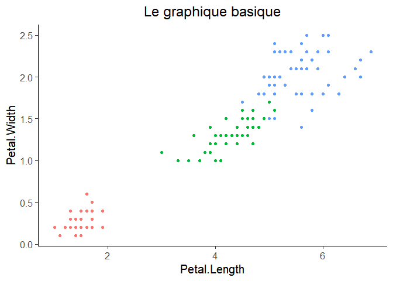
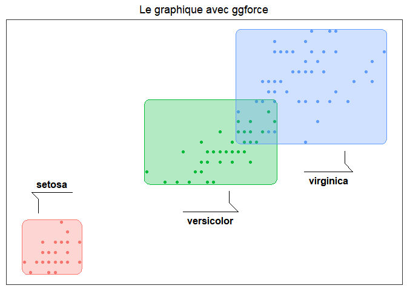
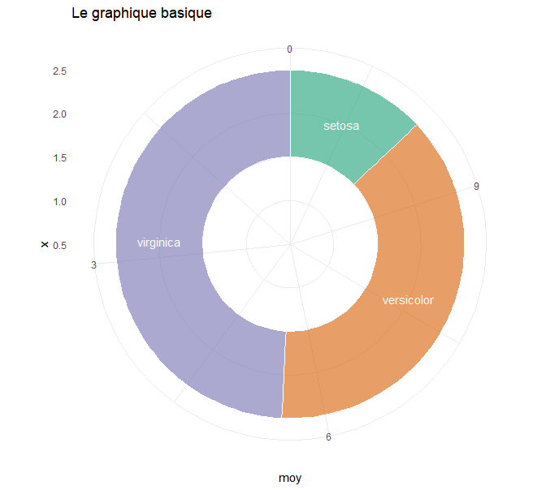
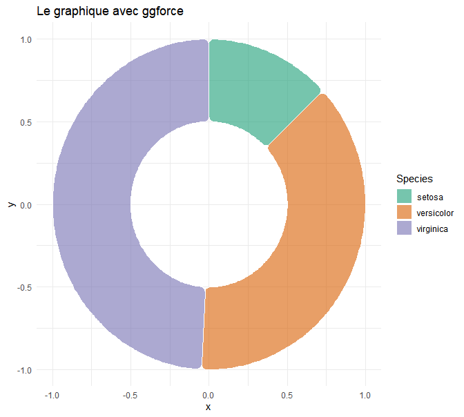
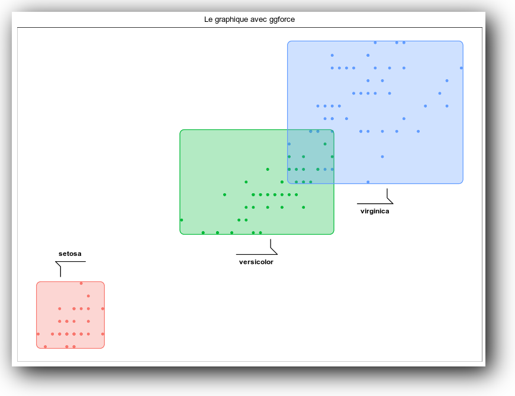
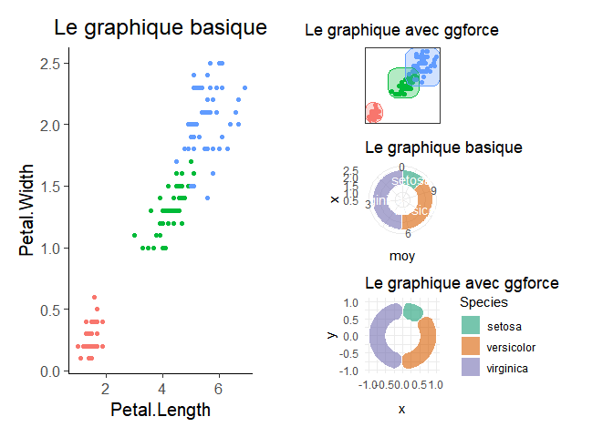

Introduction
Le package ggplot2 ou les graphiques usuels de R peuvent etre encore ameliores grace aux packages qui suivent.
Avec le package ggforce
Ce package fait partie d’une liste d’extensions du package ggplot2 : http://www.ggplot2-exts.org/gallery/
Nuage de points
library("dplyr")
library("tidyr")
library("ggplot2")
library("ggforce")
# pour centrer les titres des graphiques ggplot2
theme_update(plot.title = element_text(hjust = 0.5))
set.seed(2019)
gg_bar_base = ggplot(iris, aes(Petal.Length, Petal.Width, col = Species)) + geom_point() +
ggtitle("Le graphique basique")
gg_bar_force = ggplot(iris, aes(Petal.Length, Petal.Width, color = Species)) +
geom_point(show.legend = FALSE) + geom_mark_rect(aes(label = Species, fill = Species),
show.legend = FALSE, expand = unit(1, "mm")) +
theme_no_axes() + theme(plot.title=element_text(hjust=0.5)) + ggtitle("Le graphique avec ggforce")
gg_bar_base
gg_bar_force
Diagramme circulaire
La syntaxe est raccourcie et on evite les coordonnees polaires : le quadrillage n’est plus change en cercles.
# https://rviews.rstudio.com/2019/09/19/intro-to-ggforce/
dtf = iris %>% group_by(Species) %>% summarise(moy = mean(Petal.Length))
gg_circ_base = ggplot(dtf, aes(x = 2, y = moy, fill = Species)) + xlim(0.5, 2.5) +
geom_col(width = 1, alpha = 0.6, colour = "white", show.legend = FALSE) +
geom_text(aes(label = Species), colour = "white", position = position_stack(vjust = 0.5)) +
coord_polar("y", start=0, direction = -1) +
scale_fill_brewer(palette = "Dark2") + theme_minimal() + ggtitle("Le graphique basique")
gg_circ_force = ggplot(dtf) + geom_arc_bar(aes(x0 = 0, y0 = 0, r0 = 0.5, r = 1,
amount = moy, fill = Species),
radius = unit(2, 'mm'), colour = "white", alpha = 0.6, stat = "pie") +
labs(x0 = "x", y0 = "y") + scale_fill_brewer(palette = "Dark2") + theme_minimal() +
ggtitle("Le graphique avec ggforce")
gg_circ_base
gg_circ_force
Avec le package magick
Le package magick est specialise dans le traitement des images : https://cran.r-project.org/web/packages/magick/vignettes/intro.html
Ici on rajoute simplement un effet d’ombre au graphique.
library("magick")
img <- image_graph()
gg_bar_force
invisible(dev.off())
image_shadow(img, geometry = "100x20+30+30")
Avec le package patchwork (sur github, pas sur le CRAN)
Ce package, comme quelques autres (https://cran.r-project.org/web/packages/cowplot/vignettes/introduction.html, https://cran.r-project.org/web/packages/egg/vignettes/Ecosystem.html), vise a remplacer les parametres mfrow et mfcol de R base par une syntaxe plus intiuitive et rapide pour placer plusieurs graphiques dans une grille.
# installation : remotes::install_github("thomasp85/patchwork")
library("patchwork")
gg_bar_base | (gg_bar_force / gg_circ_base / gg_circ_force)